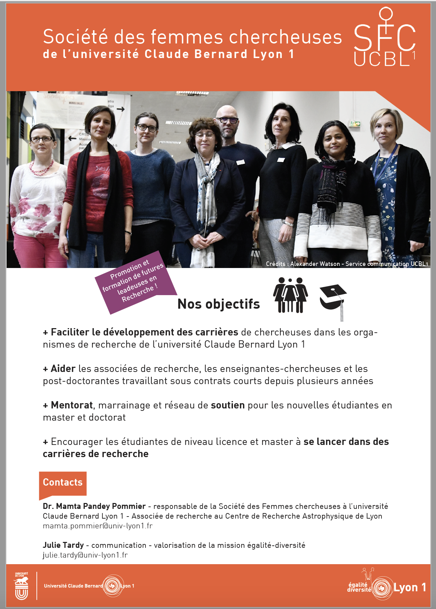
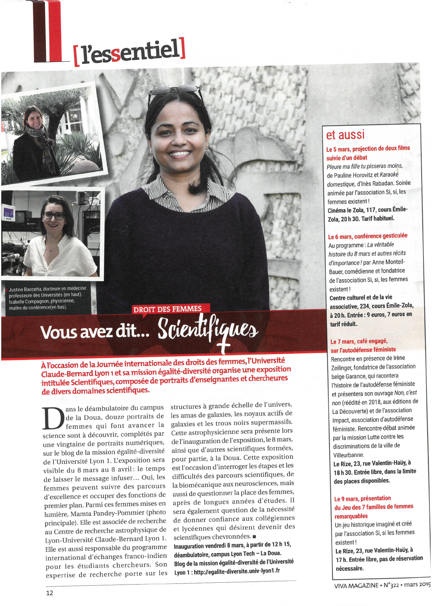

|
|

| Press Releases and support for Women career in research Keep checking for new updates ! 3-President/Responsible of 'Societe des femmes chercheuses a l’Universite Claude Bernard Lyon 1 (SFC-UCBL1)' at University Claude Bernard Lyon-1 (2019) : The French Ministery of Higher Education, Research and Innovation recently published the statistics of women in research careers in European projects with one of the main objectives: to provide access to education to girls and female entrepreneurship in academic fields. This publication highlights the low presence of women in all areas of ministerial action: training in higher education, teaching and research staff, governance bodies and innovation. The figures published for the year 2019 show marginal improvements, but the percentage of women in research still remains below or equal to 20% specially in the fields (Physical Sciences, Management and R & D Management, Mathematics and Software Design , Engineering Sciences 1, Engineering Sciences 2, etc.). The report also indicates that the percentage of women in these areas continues to decline each year due to- lack of women mentors, local support and social practices. The goal of our ministry is to help women in science careers and provide 40% of positions to women researchers in 2020. To support this global cause, I am coordinating a 'Societe des femmes chercheuses a l'Universite Claude Bernard Lyon 1 (SFC-UCBL1)' cell at the University of Claude Bernard Lyon 1, France. I myself have been able to progress in the field of research in Radio Astronomy, thanks to the long-term support offered for several years by well known scientists occupying important positions in their institutes, including Women mentors (leading LOFAR, SKA, Euclid, JWST projects) and men having an awareness of the reasons and willingness to help the situation for the deficit of women researchers in French Radio Astronomy community in perticular and Physical science in general.  2-Article on Mamta Pommier in CNRS Viva magazine on International Women's Day organized at CRAL & University Claude Bernard Lyon-1 (2019) : To support Women career in research, I am coordinating a 'Society of Women Researchers' cell at the University of Claude Bernard Lyon 1, France  1- Team of astronomers finds 25 extremely rare giant radio galaxies (2017)- Mamta Pommier(CRAL) Contact: _______________________________________________________________________________________________________________________________________ MAMTA POMMIER (Mamta.Pommier@obspm.fr & mamta.pommier@univ-lyon1.fr) USN, Observatoire de Station de Radioastronomie de Nancay, Observatoire de Paris Route de Souesmes 18330 Nancay, France & Centre de Recherche Astrophysique de Lyon- Observatoire de Lyon, 9 av Charles Andre, 69561 Saint Genis Laval Cedex, France Tel: 0033 4 78 86 85 22 email: mamtapan@gmail.com Webpage: https://pommierm.github.io/index.html http://www.researchgate.net/profile/Mamta_Pommier 
|
{kind=link}